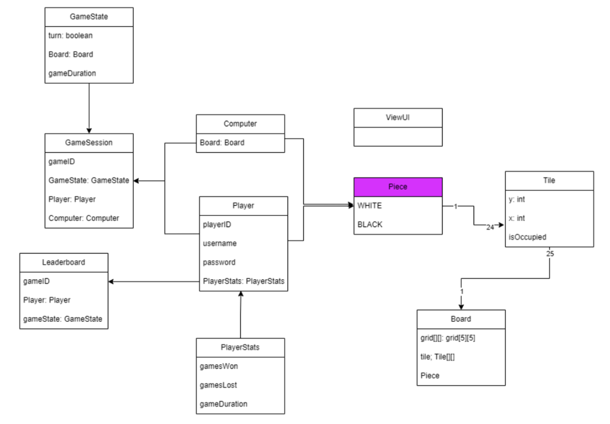
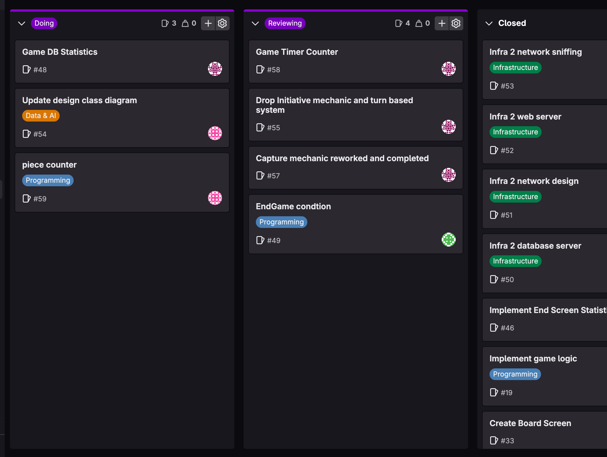
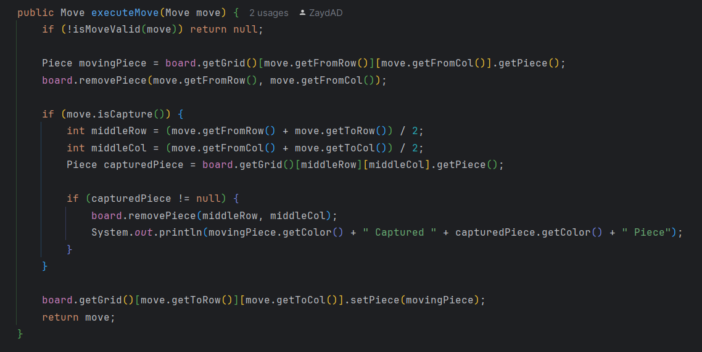
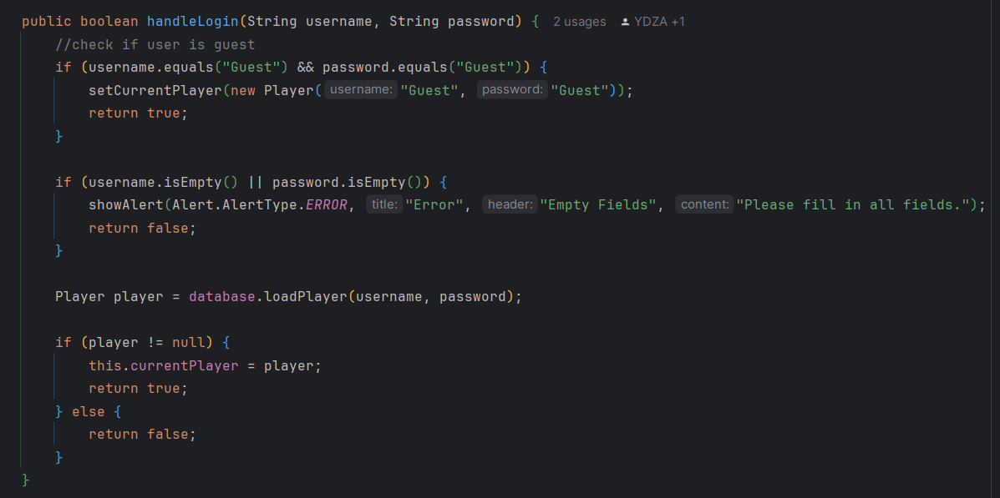
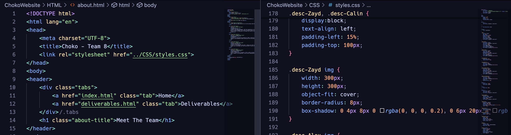
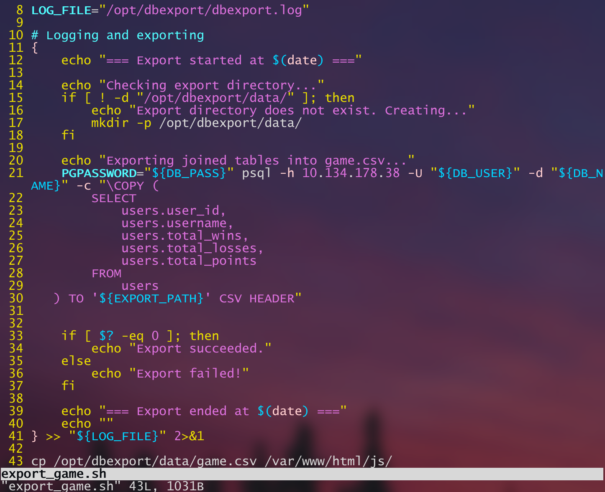
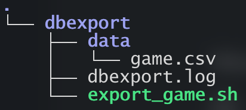
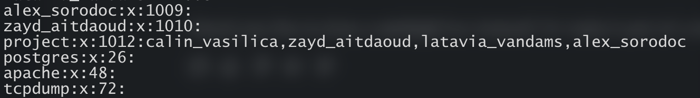
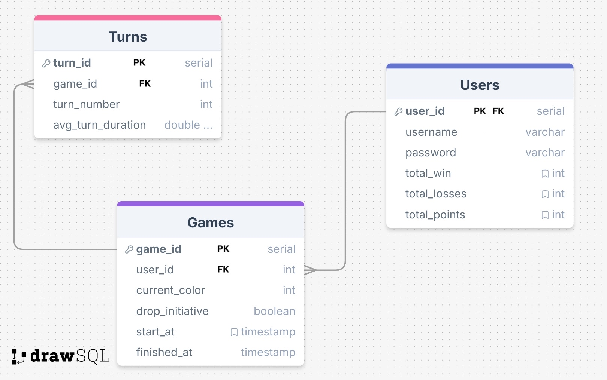
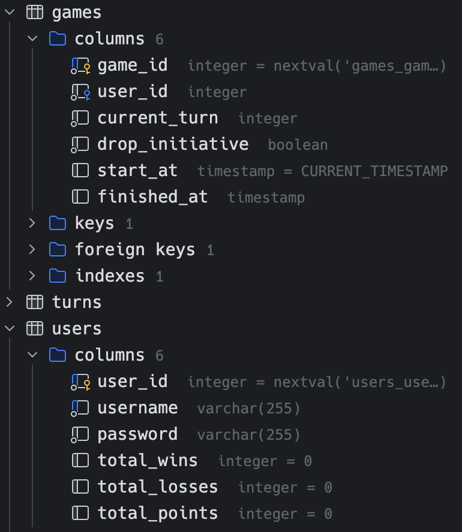

Sprint 1
- SWE: Completed the software analysis process by creating a DCD, domain model, and wireframe
- INFRA: Set up the Linux server, database server, and started on network design
- DATA&AI: Designed the database and game statistics page


| What we did well | Where to improve |
|---|---|
| Communicate our ideas well | Being more responsible outside of the classroom |
| Took feedback and applied it to our models | Understand more UML & SWE concepts |



| What we did well | Where to improve |
|---|---|
| Spread out our work | Assign issues better on GitLab |
| Learn as we go | Attempt to do the hard tasks first |
| Spread out our work based on skills | Worked too indivdually at times |



| What we did well | Where to improve |
|---|---|
| Document before implementation | Got ahead of ourselves at times |
| Kept things clean and organized | Silly mistakes |


| What we did well | Where to improve |
|---|---|
| Took feedback | Got confused and didn't ask enough questions |
| Tried our best to implement the necessary requirements | Feeling overwhelmed |